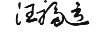
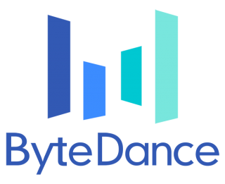
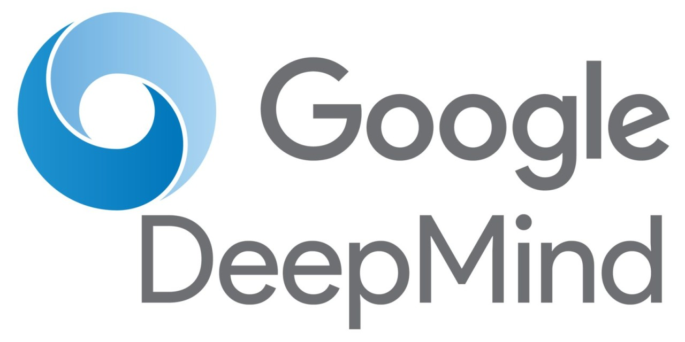
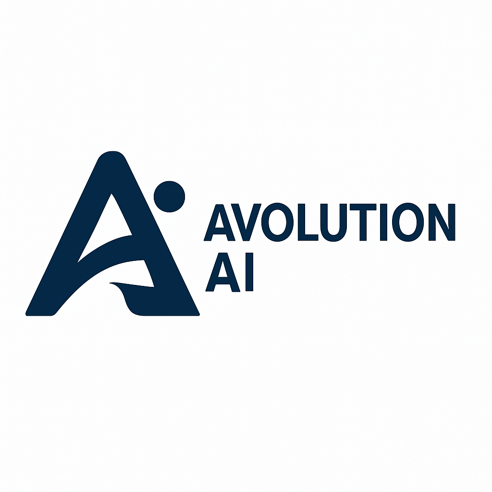
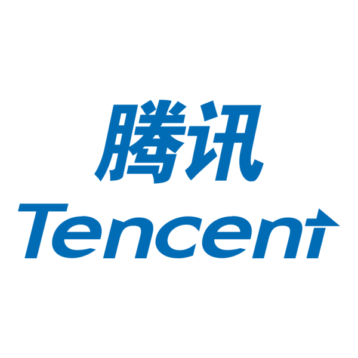

2026
Fu-Yun Wang
Ph.D. candidate, MMLab, CUHK
Fu-Yun Wang (IPA: [fu˧˥ yn˧˥ wɑŋ]) is a final year Ph.D. candidate at MMLab@CUHK. He is vibing with world model and agentic stuff. He has interned at ByteDance Seed, Reve, and Google DeepMind, and earlier collaborated with Avolution AI and Tencent AI Lab. He enjoys the process of figuring things out.
2027 job market · open to industry research opportunities.

Recent work
Selected publications
NeurIPS 2026
2026
 mni: Context Unrolling in
mni: Context Unrolling in
CVPR 2026
Highlight
NVIDIA Tech Talk
Tencent Qingyun Travel Grant
ICML 2026
JQ Investments ICML Travel Award
Blog
All postsRefine, Don’t Re-roll: Few-Step Generation by Iterating in Data Space
Our work on few-step distillation without a timestep schedule: the generator refines its own image prediction instead of re-noising it.
LLM 都会画画了，还需要训练视觉生成模型吗？
从一只小猫开始讲起。
Training a Coding Agent with slime
From a repository to a gradient: slime internals, token histories, rollout losses, and SWE-smith environments.
So, What is Jev?
Is it really something new?
Mixture of Experts: How Routing Becomes GPU Computation Colab notebook
Why fewer active parameters don’t automatically mean faster models.
RL, OPD, VSD, and GANs: One Density Ratio, Different Updates
How a log-density ratio connects policy gradients, Gaussian mean MSE, diffusion scores, and discriminator feedback—and where the equivalences end.
Show 9 earlier postsHide earlier posts
Scaling Long-Context Attention I: Exact Blocks, Rings, and Sparsity Colab notebook
A unified view of block attention: FlashAttention, Ring Attention, and sparse attention share the same blockwise computation but obey different contracts.
Scaling Long-Context Attention II: From MHA to MLA Colab notebook
How MHA, GQA, MQA, split-KV, Paged Attention, and MLA reshape the KV cache and its decode kernels.
Scaling Long-Context Attention III: Recurrent and Learned Memory Colab notebook
How Linear Attention, chunkwise training, DeltaNet, TTT, and LaCT replace a growing token history with recurrent and learned memory.
Distributional Distillation I: From a Marginal KL to Two Scores
A first-principles derivation of distributional distillation, from marginal KL objectives to two-score and f-divergence gradients.
Distributional Distillation II: What the Methods Actually Estimate
A method-by-method map of what SDS, VSD, Diff-Instruct, DMD, DMD2, and Phased DMD actually estimate.
Distributional Distillation III: From Scores to Particle Flows
From score differences to particle motion, connecting DMD, Drifting Models, and the Sinkhorn-based W-Flow through Wasserstein gradient-flow geometry.
Theoretical Analysis of ConsistencySolver (CVPR 2026 Highlight)
A numerical-analysis view of ConsistencySolver, deriving its learnable update rule from PF-ODEs and linear multistep methods.
Theoretical Analysis of Rectified Diffusion (ICLR 2025)
An optimal-transport analysis extending rectification, path straightening, and O(1/K) convergence from linear flows to general diffusion schedules.
On the Equivalence of Consistency Models and MeanFlow
A continuous-time derivation showing that consistency training reduces to MeanFlow, with an extension from one-step CM to multi-step CTM.
Research
An interactive map of the research directions below. Click a node to expand or collapse it; click a paper title to open it.
Research directions
Selected publications
Google ScholarGrouped by theme. The full list is on Google Scholar.
Diffusion post-training: acceleration & reinforcement learning
PromptRL: Prompt Matters in RL for Flow-Based Image Generation
Reve · Meta Superintelligence Labs · CUHK
ICML 2026 JQ Investments ICML Travel Award
Jointly trains language models and flow-matching models in a unified RL loop, achieving 2× sample efficiency and adaptive test-time prompt refinement.
Image Diffusion Preview with Consistency Solver
Google DeepMind · CUHK · Seoul National University
CVPR 2026 Highlight Tencent Qingyun Travel Grant
A learnable high-order ODE solver for fast, faithful diffusion previews and consistent full-step refinement, reducing interaction time by nearly 50%.
Rectified Diffusion: Straightness Is Not Your Need in Rectified Flow
ICLR 2025
In-depth theoretical analysis and empirical validation of flow matching, rectified flow, and the rectification operation. ZHIHU blog garnered 10k+ views and ~400 likes. Detailed theory note.
Phased Consistency Model
NeurIPS 2024
Validate the feasibility of one-step video generation; Adopted by Qwen-Image-2512 for first-stage initialization; Adopted by Early version of FastVideo, accelerating HunyuanVideo and WAN.
Diffusion-NPO: Negative Preference Optimization for Diffusion Models
ICLR 2025
A general, simple yet effective method for strengthened diffusion preference optimization.
Generative vision applications
Motion-I2V: Consistent and Controllable Image-to-Video Generation
SIGGRAPH 2024 Technical Papers Trailer
Continual learning
PyCIL: A Python Toolbox for Class-Incremental Learning
SCIENCE CHINA Information Sciences
Nearly 1000 GitHub stars — the most widely collected CIL toolkit.
Internship experience
2025.10 – Present

2025.6 – 2025.11
Reve Inc
Research Intern
Multimodal LMs, Diffusion Models, RL
Supervised by: Dr. Han Zhang
2025.2 – 2025.5

Google DeepMind
Research Intern
Diffusion Distillation, RL
Supervised by: Dr. Long Zhao, Dr. Ting Liu, Dr. Hao Zhou, Dr. LiangZhe Yuan
Collaborated with Prof. Bohyung Han, Prof. Boqing Gong
2023.10 – 2024.10

Avolution AI Acquired by MiniMax
Research Collaboration
Video Diffusion, Distillation
Collaborated with: Dr. Zhaoyang Huang, Dr. Xiaoyu Shi, Weikang Bian
2022.6 – 2022.12

Tencent AI Lab
Research Intern
Continual Learning
Supervised by: Dr. Liu Liu, Prof. Yatao Bian
Education
2023 – Present
The Chinese University of Hong Kong
Ph.D. in Engineering
Supervisor: Prof. Hongsheng Li & Prof. Xiaogang Wang
2019 – 2023
More
Talks
- Oct 2024TechBeat
- Dec 2024Kuaishou Kling
- Jan 2025Nanjing University
- VideoTalk video · Chinese
Awards
- 2026JQ Investments ICML Travel Award · PromptRL
- 2026Tencent Qingyun Travel Grant · ConsistencySolver
- 2025CVPR Outstanding Reviewer
- 2023HKPFS
Earlier awards
- 2023Outstanding Graduate of NJU
- 2023Outstanding Undergraduate Thesis of NJU
- 2022Sensetime Scholarship
- 2022Huawei Scholarship
- 2021National Scholarship
Academic services
Reviewer for TPAMI, TCSVT, PRL, CVPR, NeurIPS, ICLR, ICML, ECCV, ICCV, BMVC, and SIGGRAPH Asia.
Reviewing years
| CVPR / NeurIPS | 2023–2025 |
| ICLR / ICML | 2024–2025 |
| ECCV / ICCV | 2024 / 2025 |
| BMVC / SIGGRAPH Asia | 2024 / 2025 |